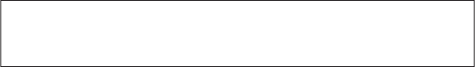
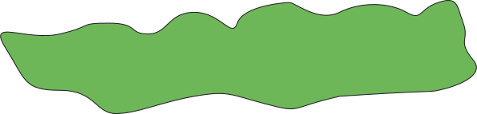
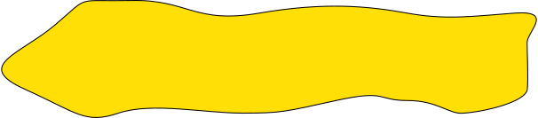
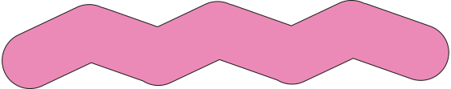

SANDWICH IDENTITY
전체 전시 컨셉인, 샌드위치에 관한 아이데이션 작업
MAPPING TIME
‘시간’을 정보로 선정해 시각적으로 표현한다.
그 내용은 당신에게 의미있고 흥미로워야 한다. 자신이 생각하는
‘지도’의 개념을 재정립 후 자신만의 해석이 깃든 시간 지도를
완성한다.
SHAPE POSTER
기본 도형의 의미(사회적, 문화적, 역사적 등)와 특징, 맥락 또는 숨겨진 성질을 보여주는데 목적을 두며 기본 도형에 관한 포스터를 제작한다.
삼각형, 사각형, 원 세가지의 도형을 한정으로 각
도형에 관한 연구 후 강조, 분류, 단순화, 표현, 배치등의 다양한 방식을 활용하여 연구 내용의 문맥을 보여준다.
VEGETABLE
자신을 가장 날 나타내는 야채를 주제로 삼고, 그에 관련한 연구 보고서를 만든다. 연구 결과는 이후 디자인에 반영한다.
(미니멀 맥시멀/ 제너러티브 시스템)
미니멀리즘과 맥시멀리즘에 대해 각자의 정의를 내린 후 이를 바탕으로 자신의 야채가 드러난
두장의 포스터를 제작한다. 2번에서 리서치한 자신의 야채를
위한 시스템을 만들고 그에 따른 스크립트를 제작한다. 시스템은 어떤 형태나 경험이 생성되는지를 지시하는 규칙을 이용한다.
스크립트는 스스로 혹은 다른 이에게 지시를 내리는 형태가 될 것이고, 그에 따른 결과는 다양할 것이다.
GROUP IDENTITY
시각디자인2를 수강하는 우리의 브랜드는 어떤 형태일까.
‘자신’을 브랜딩 하는 것에서 나아가서 ‘우리’를 브랜딩해보자. 함께 정한 그룹 브랜딩 컨셉을 기반으로 그래픽 메뉴얼부터 전시 굿즈, 공간 디자인까지 브랜드의 체계를 만들어 나간다.
EXHIBITION
전시 설치 과정과 완료 된 기록들
COLLECTED BOOK
‘시간’을 정보로 선정해 시각적으로 표현한다.
신문, 버려진 종이, 다른사람의 작품, 잡지 등의 기타 자료의 인쇄물을 사용하여 책을 바인딩한다.
다양한 정보의 출처에도 전체적인 책은 하나의 작품으로서 조화를 이루고 있다.
사전에 조절 할 수 있는 요인도 있고, 예측 불가능한 부분도 있을것이다.
인쇄물에 다른 요소를 임의로 추가하거나 콜라주하지 않고,
서로 다른 정보들을 한데 모아 'Collected book'을 만든다.
SELF IDENTITY
스스로를 브랜딩 해보자. 각자의 아이덴티티를 효과적으로 보여 줄 수 있는 방법을 생각하며 자신의 브랜드 이름과 페르소나, 시각적 효과를 정리하자.
자신의 경험으로 형성된 이미지와 가치관은
브랜드에 투영하고,
자신의 브랜드가 구체적으로 어떤 제품, 어떤 플랫폼, 어떤 그래픽과 컨셉을 가지고 있을지 정리해보고
디자인한다.